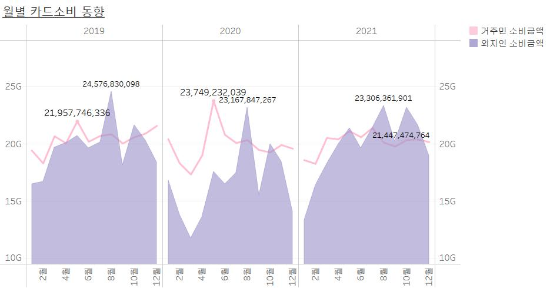
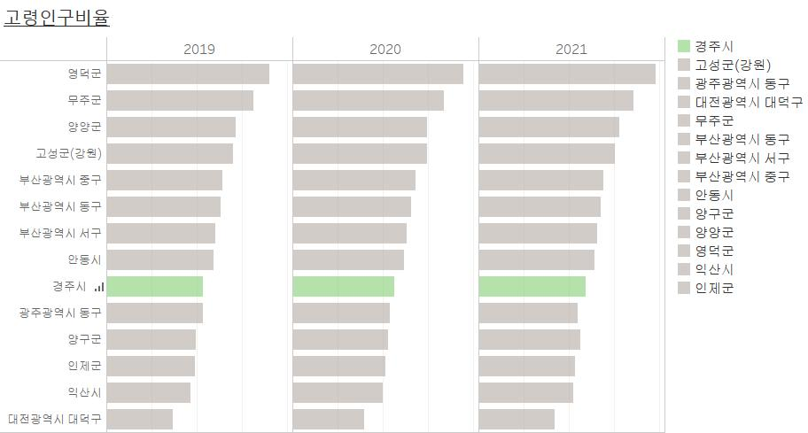
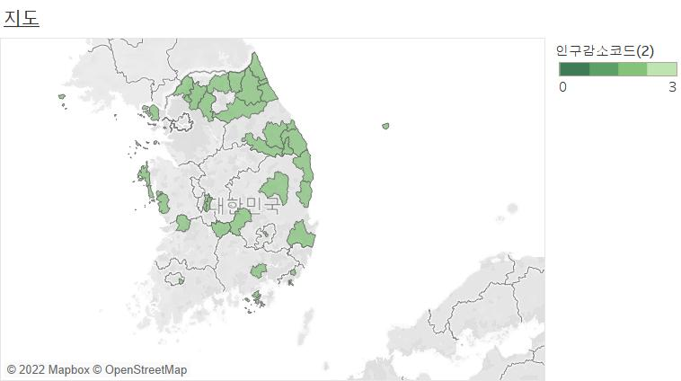
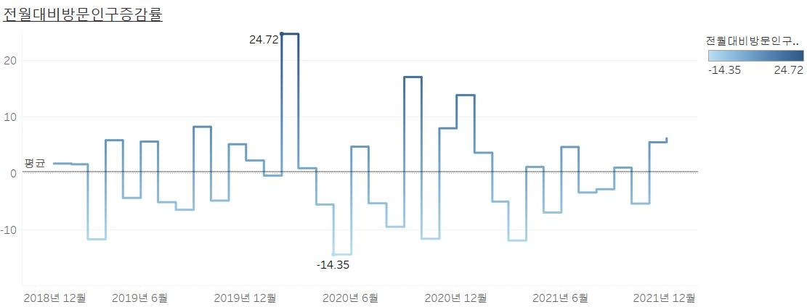
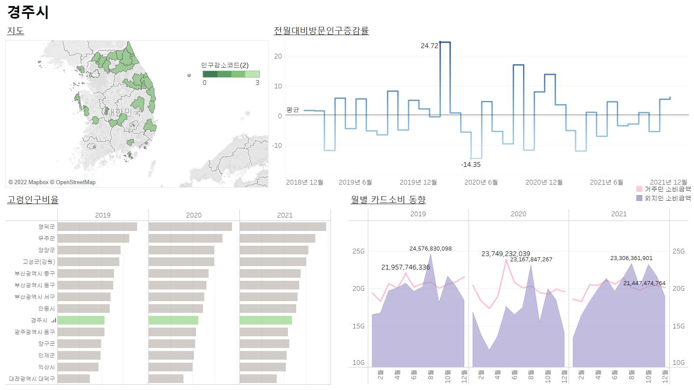

MENU 1
MENU 2
MENU 3
메타데이터 확인
주요 데이터
전년월 대비
방문인구 증감률
고령인구비율
월별 카드소비내역
(BC 카드)
지역 인구감소
분류코드
지역 검색 >>
- 시 / 도 -
서울특별시
인천광역시
대전광역시
세종특별자치시
광주광역시
대구광역시
울산광역시
부산광역시
제주특별자치도
경기도
강원도
충청북도
충청남도
전라북도
전라남도
경상북도
경상남도
- 시군구 -
    